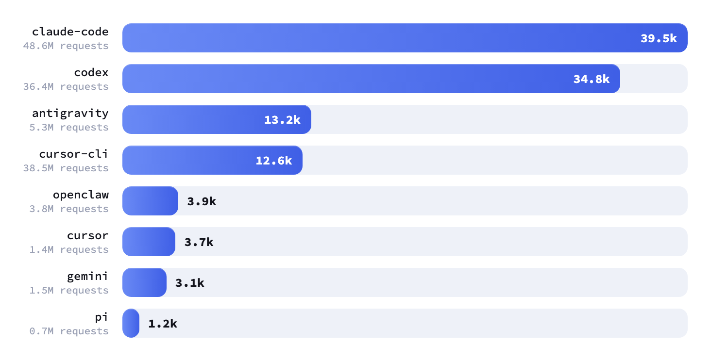
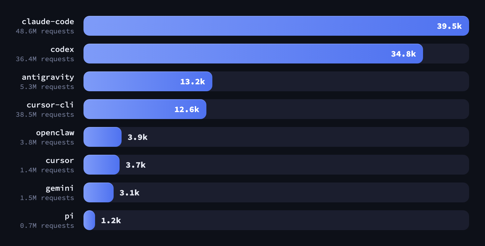
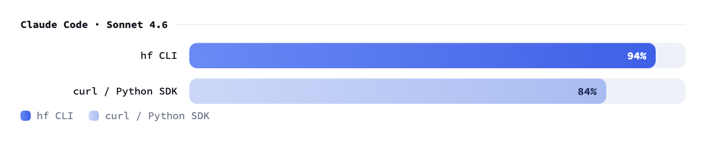
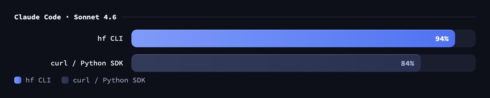
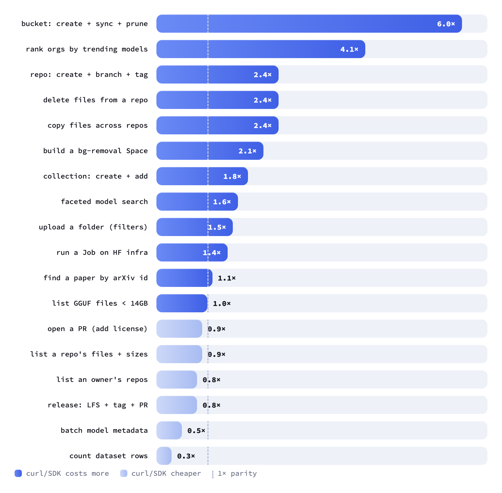
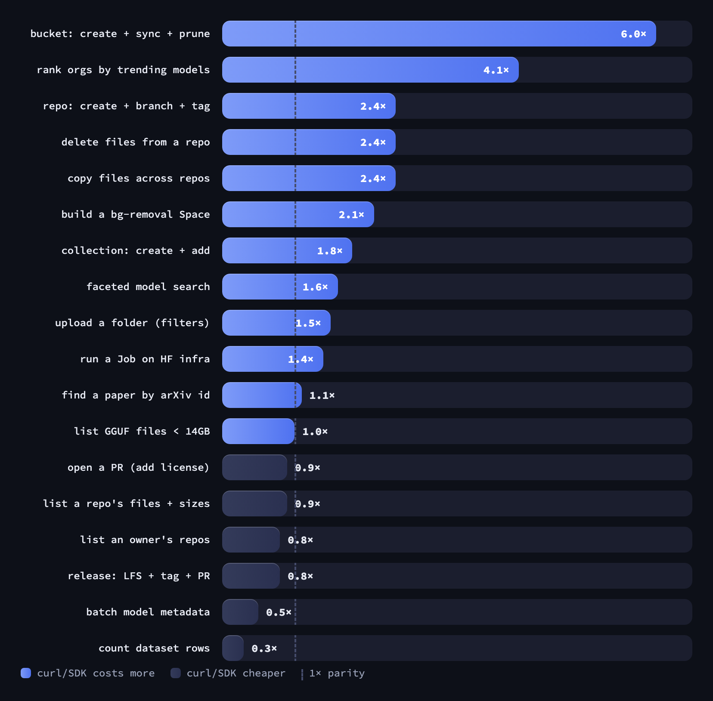
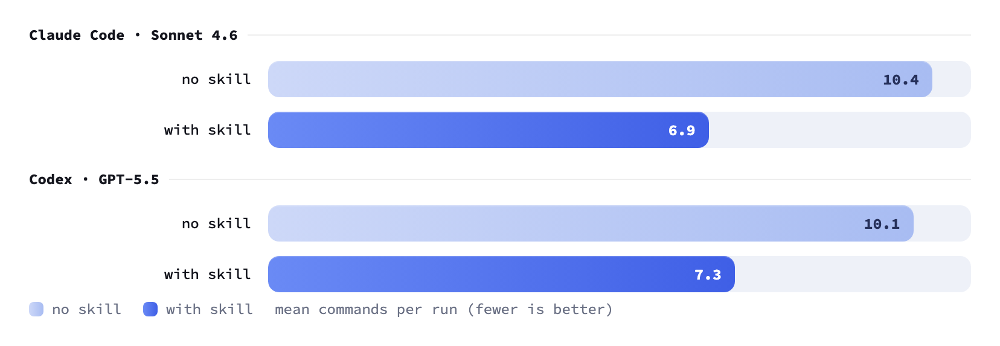
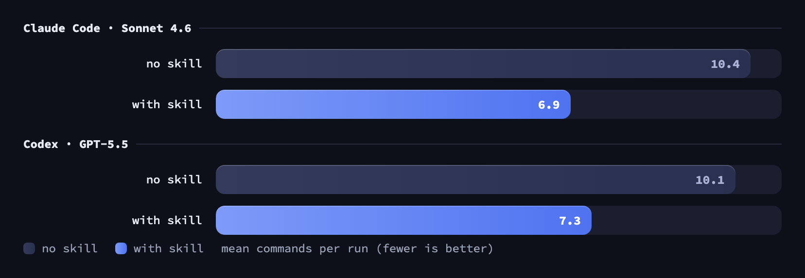

将 hf CLI 设计为面向智能体的 Hub 交互优化工具
文章背景与核心概要
随着 Claude Code、Codex 和 Cursor 等编码智能体（Coding Agents）在 Hugging Face Hub 上的工作流中扮演越来越核心的角色，Hugging Face 对官方的 hf 命令行界面（CLI）进行了重新设计，以完美兼顾人类用户与 AI 智能体。该 CLI 通过自动检测智能体环境，能够动态调整输出渲染方式——从适合人类阅读的丰富表格，转变为干净、节省 Token 且易于解析的 TSV 结构。
基准测试表明，在复杂的多步骤工作流中，利用优化后的 hf CLI 相比直接使用 curl 或 Python SDK 基准，能够将 Token 消耗降低最多 6 倍。本文深入探讨了这一面向智能体优化的 CLI 的设计理念、架构特性以及实测表现。
📌 摘要 (Summary)
As coding agents (like Claude Code, Codex, and Cursor) increasingly drive workflows on the Hugging Face Hub, Hugging Face has redesigned the official
hfcommand-line interface to seamlessly accommodate both human users and AI agents. By detecting agent environments automatically, the CLI adapts its renderings—shifting from rich, human-friendly tables to clean, token-efficient, and parseable TSV structures. Benchmarks reveal that on complex multi-step workflows, leveraging thehfCLI reduces token usage by up to 6× compared to a rawcurlor Python SDK baseline.
Hub 上的 AI 智能体流量 (AI Agent Traffic on the Hub)
自 2026 年 4 月开始追踪以来，Hugging Face 通过读取本地环境变量（例如 CLAUDECODE、CODEX_SANDBOX 或通用的 AI_AGENT）来监测智能体的使用情况。这不仅能识别出驱动它们的底层框架，还会为发往 Hub 的请求打上归属标头（agent/<name>）。
Since tracking began in April 2026, Hugging Face has monitored agent usage by reading native environment variables (such as
CLAUDECODE,CODEX_SANDBOX, or the universalAI_AGENT). This identifies the driving framework and tags inbound Hub requests with an attribution header (agent/<name>).


Claude Code and Codex lead user and request volume by a wide margin, scaling rapidly as developers delegate repository management tasks to autonomous coders.
Claude Code 和 Codex 在用户数和请求量上遥遥领先，随着开发者将仓库管理任务交托给自主编码器，这一数字正在飞速增长。
为人类与智能体共同打造 (Built for Humans and Agents)
人类需要丰富的视觉反馈（ANSI 颜色、截断并对齐的表格、进度指示器），而智能体则需要完整且未被截断的字符串值、结构化布局以及极低的 Token 消耗。hf CLI v1.9.0+ 通过根据执行上下文动态呈现相同的命令，成功弥合了这一鸿沟。
Humans require rich feedback (ANSI colors, truncated padded tables, progress indicators), whereas agents demand complete, un-truncated string values, structured layouts, and minimal token consumption. The
hfCLI v1.9.0+ bridges this gap by rendering identical commands differently depending on the execution context.
同一命令，多种渲染方式 (One Command, Multiple Renderings)
当检测到智能体环境时，输出会自动切换为干净的 TSV（制表符分隔值）格式，其中包含完整的 ID、精确的 ISO 时间戳以及未经截断的元数据数组。
When an agent environment is detected, outputs automatically switch to a clean TSV (Tab-Separated Values) format containing full IDs, precise ISO timestamps, and un-truncated metadata arrays.
# human (default in a terminal): aligned table, truncated to fit, with a hint
> hf models ls --author Qwen --sort downloads --limit 3
ID CREATED_AT DOWNLOADS LIBRARY_NAME LIKES PIPELINE_TAG PRIVATE TAGS
------------------------ ---------- --------- ------------ ----- --------------- ------- -------------------------
Qwen/Qwen3-0.6B 2025-04-27 21156913 transformers 1285 text-generation transformers, safetens...
Qwen/Qwen2.5-1.5B-Ins... 2024-09-17 15143953 transformers 725 text-generation transformers, safetens...
Qwen/Qwen3-4B 2025-04-27 14808352 transformers 625 text-generation transformers, safetens...
Hint: Use `--no-truncate` or `--format json` to display full values.
# agent (auto-detected): TSV, full ids + ISO timestamps + every tag, nothing truncated
$ hf models ls --author Qwen --sort downloads --limit 3
id created_at downloads library_name likes pipeline_tag private tags
Qwen/Qwen3-0.6B 2025-04-27T03:40:08+00:00 21156913 transformers 1285 text-generation False ['transformers', 'safetensors', 'qwen3', 'text-generation', 'conversational', 'arxiv:2505.09388', 'base_model:Qwen/Qwen3-0.6B-Base', 'base_model:finetune:Qwen/Qwen3-0.6B-Base', 'license:apache-2.0', 'text-generation-inference', 'endpoints_compatible', 'deploy:azure', 'region:us']
Qwen/Qwen2.5-1.5B-Instruct 2024-09-17T14:10:29+00:00 15143953 transformers 725 text-generation False['transformers', 'safetensors', 'qwen2', 'text-generation', 'chat', 'conversational', 'en', 'arxiv:2407.10671', 'base_model:Qwen/Qwen2.5-1.5B', 'base_model:finetune:Qwen/Qwen2.5-1.5B', 'license:apache-2.0', 'text-generation-inference', 'endpoints_compatible', 'deploy:azure', 'region:us']
Qwen/Qwen3-4B 2025-04-27T03:41:29+00:00 14808352 transformers 625 text-generation False ['transformers', 'safetensors', 'text-generation', 'arxiv:2309.00071', 'arxiv:2505.09388', 'base_model:Qwen/Qwen3-4B-Base', 'base_model:finetune:Qwen/Qwen3-4B-Base', 'license:apache-2.0', 'endpoints_compatible', 'deploy:azure', 'region:us']
下一步命令提示 (Next-Command Hints)
为了简化多步骤工作流，hf 命令会自动输出具备上下文感知的提示，指引智能体（或用户）执行所需的下一步确切命令：
To streamline multi-step workflows,
hfcommands automatically output context-aware hints directing the agent (or user) to the exact subsequent command needed:
$ hf jobs run --detach python:3.12 python train.py
✓ Job started
id: 6f3a1c2e9b
url: https://huggingface.co/jobs/celinah/6f3a1c2e9b
Hint: Use `hf jobs logs 6f3a1c2e9b` to fetch the logs.
非阻塞且支持安全重试 (Non-Blocking and Safe to Retry)
在智能体模式下，如果缺少确认参数，破坏性操作会直接快速失败（Use --yes to skip confirmation.），从而防止提示挂起。此外，数据操作支持 --dry-run，允许在消耗带宽前安全地预览数据传输。
Destructive actions fail fast in agent mode when confirmations are omitted (
Use --yes to skip confirmation.), preventing hanging prompts. Additionally, data operations support--dry-runto preview data transfers safely before committing bandwidth.
针对编码智能体的 hf CLI 基准测试 (Benchmarking the hf CLI for Coding Agents)
我们针对 10 个配置重复运行了 18 个非平凡的 Hub 任务，涵盖顶级编码智能体（Claude Code / Sonnet 4.6 和 OpenAI Codex / GPT-5.5），并在实时 API 检查下评估了输出成功率和 Token 负担。
We ran 18 non-trivial Hub tasks across 10 repetitions per configuration using top-tier coding agents (Claude Code / Sonnet 4.6 and OpenAI Codex / GPT-5.5), evaluating output success rates and token burdens against live API checks.
| Agent | Tool | Success Score | Token Usage | Self-Report Error |
|---|---|---|---|---|
| Claude Code (Sonnet 4.6) | hf CLI |
0.94 | baseline | 2 / 163 |
| curl / Python SDK | 0.84 | 1.3–1.6× tokens | 11 / 163 | |
| Codex (GPT-5.5) | hf CLI |
0.93 | baseline | 3 / 163 |
| curl / Python SDK | 0.92 | 1.6–1.8× tokens | 10 / 163 |
结果与发现 (Results and Findings)




- Token 效率： 虽然基础读取操作的性能表现相近，但复杂的编排任务（如存储桶同步、仓库克隆、分支创建和文件清除）迫使手动 API 实现消耗比统一的
hf命令多出 2 倍到 6 倍的 Token。 - 可靠性： 先进模型在使用原生代码替代方案时成功率较高，但与抽象的 CLI 调用相比，仍然伴随着沉重的 Token 和认知开销。
- Token Efficiency: While basic read operations perform similarly, complex orchestration tasks (such as bucket synchronization, repository cloning, branching, and file purging) force manual API implementations to burn 2× to 6× more tokens than the unified
hfcommands.- Reliability: Advanced models succeed more frequently with raw code alternatives, but still carry heavy token and cognitive overheads compared to abstract CLI calls.
hf-cli 技能包 (The hf-cli Skill)
为了减少试错探索循环，hf 内置了一个自动生成的技能定义（skill definition），智能体可以将其加载到上下文中。
To reduce trial-and-error discovery loops,
hfships an auto-generated skill definition that agents can load into context.
# For Codex, Cursor, OpenCode, Pi, etc.
hf skills add
# Includes Claude Code support
hf skills add --claude


Integrating this skill reduces mean tool calls per task from roughly 10 down to 7 (~30% fewer iterations) by removing the need for agents to query
--helpdocumentation dynamically.
通过消除智能体动态查询 --help 文档的需求，集成此技能可将每个任务的平均工具调用次数从大约 10 次降至 7 次（迭代次数减少约 30%）。
快速上手 (Get Started)
安装面向智能体优化的 CLI 环境：
To install the agent-optimized CLI environment:
# macOS / Linux
curl -LsSf https://hf.co/cli/install.sh | bash
# Windows (PowerShell)
powershell -ExecutionPolicy ByPass -c "irm https://hf.co/cli/install.ps1 | iex"
将原生技能包添加至你的智能体：
Add the native skill package to your agent:
hf skills add --claude
认证并测试：
Authenticate and test:
hf auth login